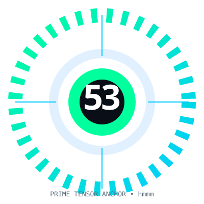
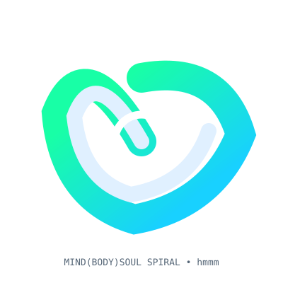
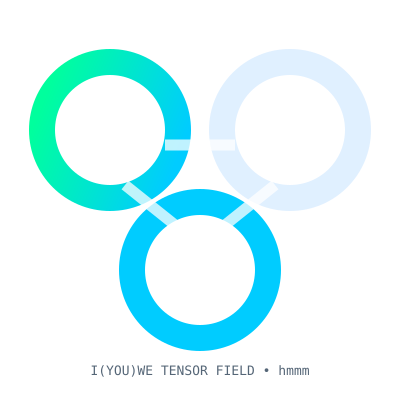
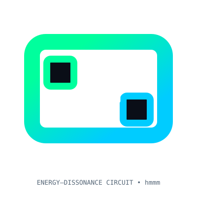

This page gathers visual materials used across the site: diagrams, symbolic graphics, and other image assets. These images may reflect canon language or design ideas, but they should not be read as proof of deployment or validation.

A symbolic structural diagram used in the site’s visual language.

A triadic visual motif used for conceptual and illustrative purposes.

A relational diagram used in the site’s symbolic vocabulary.

A visual model associated with internal diagnostic and design language.
These visuals are kept because they help orient the site’s symbolic and conceptual material. They are supporting assets, not standalone evidence claims. hmmm: some image labels may still benefit from a later glossary pass.